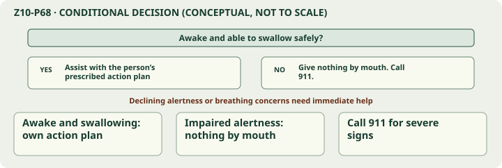

Z10-P68 · Wilderness medicine · New manuscript
Distinguish alert low blood sugar from unresponsive diabetic emergencies
Support safe fast-acting sugar only when a diabetic patient is fully able to swallow, and call 911 immediately if altered or unresponsive.
When it applies · Known person with diabetes developing sudden shakiness, sweating, pale skin, irritability, confusion, or collapse during physical exertion or delayed meals.
Equipment · Patient's own glucose tablets/gel/juice, personal diabetes action plan, and 911 communication.

Actions
- Watch for rapid low-blood-sugar (hypoglycemia) onset during heavy outdoor exertion or skipped meals—sweating, trembling, sudden weakness, irritability, or dizziness—and stop activity immediately.[M20, T01]
- ONLY if the person is fully awake, able to sit up, and swallowing safely without coughing, help them take their own fast-acting sugar (such as labeled glucose tablets, fruit juice, or regular sugary drink) and recheck symptoms after 15 minutes; follow with a balanced snack once alert.[M20, ED]
- If the person is severely confused, drowsy, seizing, unable to swallow safely, or unresponsive, NEVER put food, liquid, or gel into their mouth (aspiration hazard)—call 911 immediately and place in recovery position if breathing normally (trained companions with the patient's own prescribed glucagon follow its exact label).[M22, T02, M05]
Failure recognition · Pouring fruit juice into the mouth of a drowsy, slurring diabetic hiker who cannot protect their airway.[M22, M05]
Verify · Confirm swallowing safety before ANY oral sugar, recheck clarity at 15 minutes, and keep zero oral intake if drowsy or altered.[M20, M22]
Stop or change course · Failure to improve within 15 minutes, declining alertness, inability to swallow, or unresponsiveness requires immediate 911 emergency care.[T02, M22]
Evidence and editorial notes
- M05 · NIH / MedlinePlus · Shock (current web edition)
- Section: Recognizing Circulatory Shock and Positioning · Conditions: Injured or ill patient with pale cool clammy skin, rapid weak pulse, confusion, or dizziness
Support: Treat suspected shock as a life-threatening emergency: call 911, control external bleeding, keep the person warm and insulated from cold ground, and do not give food or drink.
Limitations: Field responders cannot diagnose internal hemorrhage or administer IV fluids. · Conflicting evidence: None; reinforces keeping suspected shock patients NPO and warm.
Editorial note: Core shock recognition and stabilization boundary in Z10. · Specialist reviewer: Emergency and wilderness medicine
Primary source · checked 2026-11-24 - M20 · NIH / MedlinePlus · First Aid Overview (current web edition)
- Section: Lay First-Aid Scope, Kit Readiness, and Documentation · Conditions: Pre-trip kit preparation and remote patient monitoring
Support: Maintain an inspected, unexpired first-aid kit matched to your actual training, keep written patient observations (time, responsiveness, breathing, symptoms, interventions) for EMS handoff, and practice skills in certified courses.
Limitations: Carrying advanced medical instruments without clinical training adds risk rather than capability. · Conflicting evidence: None; aligns with ARC and NPS-K.
Editorial note: Anchors kit sizing, SOAP-style lay observation logs, and scope-of-practice cards. · Specialist reviewer: Wilderness EMS and clinical education
Primary source · checked 2026-11-24 - M22 · American Red Cross · First Aid Steps (current web edition)
- Section: First Aid Steps > Patient Monitoring, Recovery Position, and EMS Handoff · Conditions: Breathing unresponsive patient without suspected spinal injury awaiting EMS
Support: Place an unresponsive but normally breathing patient with no suspected spinal trauma onto their side in a stable recovery position to protect the airway while continuously rechecking breathing until EMS takes over.
Limitations: Do not move a patient with suspected spinal trauma unless immediate scene danger or airway obstruction requires it. · Conflicting evidence: None; aligns with ARC/AHA lay positioning.
Editorial note: Anchors airway-protection positioning and handoff documentation. · Specialist reviewer: EMS and emergency medicine
Primary source · checked 2026-11-24 - T01 · American Red Cross · First Aid Steps (current web edition)
- Section: First Aid Steps > Check the scene; check the person · Conditions: Lay responder in United States; assess safety before contact
Support: Check scene safety, responsiveness, breathing and immediately life-threatening conditions.
Limitations: Lay guidance does not replace advanced clinical or rescue protocols. · Conflicting evidence: None; universal first-response opening gate.
Editorial note: Anchors scene-safety-first rule across Z01. · Specialist reviewer: EMS and wilderness medicine
Primary source · checked 2026-11-24 - T02 · American Red Cross · First Aid Steps (current web edition)
- Section: First Aid Steps > Call 9-1-1 · Conditions: Lay emergency response to unresponsiveness, abnormal breathing or severe bleeding
Support: Activate EMS and get needed equipment. Follow dispatcher directions and act within training.
Limitations: Remote locations may delay EMS arrival, requiring sustained stabilization after activation. · Conflicting evidence: None; aligns with NPS-E.
Editorial note: Mandates early emergency activation and dispatcher adherence. · Specialist reviewer: EMS and wilderness medicine
Primary source · checked 2026-11-24
Source lineage · NIH MedlinePlus First Aid and American Red Cross; new manuscript · Classification · New manuscript.